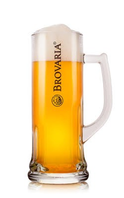

Piwo!
Piwo – napój alkoholowy otrzymywany w wyniku fermentacji alkoholowej brzeczki piwnej. Brzeczka stanowi wodny wyciąg ze słodu browarnego z dodatkiem chmielu i ewentualnie innych surowców. W szerokim znaczeniu, zwłaszcza historycznym, piwem określa się napój fermentowany oparty na zbożowym surowcu. Piwo to najstarszy i najczęściej spożywany napój alkoholowy oraz trzeci pod względem popularności po wodzie i herbacie napój na świecie.
Produkcja piwa najczęściej przebiega następująco:
- rozdrobniony słód (zwykle jęczmienny) miesza się z ciepłą wodą, czasem z dodatkiem innych surowców skrobiowych i enzymów
- uzyskany ekstrakt (brzeczka) wraz z chmielem poddawany jest gotowaniu
- ciecz jest klarowana i schładzana
- dodane drożdże piwowarskie powodują fermentację
- powstałe piwo zazwyczaj filtruje się i podaje jako napój musujący z uwalniającymi się pęcherzykami dwutlenku węgla tworzącymi pianę
Na charakterystyczne cechy sensoryczne piwa składają się substancje pochodzenia zbożowego, aromat i goryczka chmielowa, alkohol i dwutlenek węgla. Istotnym parametrem piwa jest zawartość ekstraktu przed fermentacją złożonego głównie z cukrów (ulegających przemianom biochemicznym do alkoholu) i dekstryn, a także ze związków azotowych i soli mineralnych. Zwykle zawartość ekstraktu wyrażana jest w stopniach Plato. Najpopularniejsze piwa, jasne lagery, zawierają przeciętnie ponad 90% wody i ok. 5% alkoholu objętościowo, ale wartości te mogą odbiegać w zależności od stylu piwa. Drożdże piwne w procesie fermentacji pozwalają uzyskać do kilkunastu procent alkoholu obj., ale w wyniku wymrażania wody jego zawartość można zwiększyć nawet do ponad 60%. Z drugiej strony przy użyciu odpowiedniej technologii produkcji można uzyskać piwo bezalkoholowe, zawierające poniżej 0,5% alkoholu obj.
Do piwa w szerokim znaczeniu można zaliczyć podpiwek, jak również kwas chlebowy z Europy Wschodniej (wytwarzany poprzez fermentację chleba), tak zwane wina ryżowe (np. japońskie sake, chińskie huangjiu, koreańskie cheongju), mętne, fermentujące piwa afrykańskie z prosa, sorga, kukurydzy określane jako opaque beer, wiele fermentowanych napojów z Ameryki Środkowej i Południowej jak chicha z kukurydzy.
Wyraz piwo wywodzi się z prasłowiańskiego słowa pivo oznaczającego napitek, napój[15]. Podobnie jest w wielu językach słowiańskich: białoruski: піва, bośniacki, chorwacki, czeski, słowacki, słoweński: pivo, macedoński, rosyjski, ukraiński: пиво. Prasłowiański wyraz *pivo utworzony został od prasłowiańskiego czasownika *piti, czyli pić (z indoeuropejskiego *pō(i)-: *pī-) z dodatkiem przyrostka -vo.